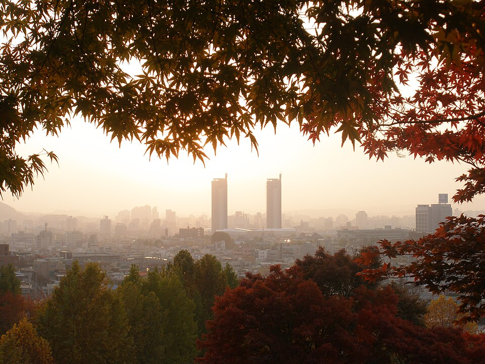

대전 서구 검정고시 — 학교를 그만둔 뒤 1년을 어떻게 쓸까

학교를 그만두고 검정고시를 준비하기로 했다면, 가장 먼저 부딪히는 건 공부가 아니라 갑자기 비어 버린 하루입니다. 시간표가 사라지고 아무도 뭘 하라고 하지 않는 상태가 생각보다 어렵습니다. 대전 서구 검정고시를 준비하는 청소년과 보호자분들을 위해, 남은 1년을 어떻게 나눠 쓰면 좋을지 정리했습니다.
'합격'만 목표로 잡으면 시간이 남습니다
검정고시는 평균 60점이면 합격이고, 학교 수업처럼 1년 내내 붙잡고 있어야 하는 분량이 아닙니다. 그래서 합격 하나만 목표로 두면, 준비가 끝난 뒤의 시간이 통째로 비어 버립니다. 이 빈 시간이 길어지면 다시 공부로 돌아오기가 어려워집니다.
그래서 처음부터 목표를 두 겹으로 잡는 편이 낫습니다. 앞쪽은 합격, 뒤쪽은 그다음입니다. 그다음이 대학이면 수능 과목으로, 취업이면 자격증으로 이어집니다. 뒤쪽이 정해져 있으면 앞쪽을 서두를 이유도 분명해집니다.
앞 몇 달은 '학교 없는 하루'에 적응하는 기간입니다
자퇴 직후에 바로 하루 8시간씩 공부가 되는 경우는 거의 없습니다. 학교에 다닐 때는 자리에 앉아 있는 것 자체를 학교가 대신 관리해 줬는데, 그게 없어졌기 때문입니다.
그래서 처음 몇 주는 분량보다 시작 시각을 지키는 것에 초점을 두시는 게 좋습니다. 오전 몇 시에는 무조건 책상에 앉는다, 이것 하나만 자리를 잡아도 그 뒤로 분량은 늘릴 수 있습니다. 반대로 분량부터 크게 잡으면 며칠 만에 무너지고, 무너진 뒤에는 "역시 안 된다"는 생각이 남아서 더 오래 쉬게 됩니다.
과목은 한꺼번에 말고 두세 개씩
전 과목을 동시에 펴 놓으면 어느 것도 끝이 안 보입니다. 과목 합격제가 있으니 두세 과목씩 묶어서 확실히 넘기고 다음 묶음으로 가는 방식이 체감상 훨씬 수월합니다. 끝낸 과목이 하나씩 쌓이면 남은 양이 눈에 보여서 계속하기가 쉬워집니다.
묶는 순서는 사람마다 다릅니다. 외워서 올라가는 과목을 먼저 넘겨 자신감을 만드는 경우도 있고, 영어나 수학이 많이 비어 있으면 그쪽을 일찍 시작해 길게 가져가는 편이 나은 경우도 있습니다. 지금 어디쯤인지는 기출 한 회분만 풀어 봐도 대체로 구분됩니다.
혼자 있는 시간이 길어지는 것도 챙겨야 합니다
자퇴 후에 성적보다 먼저 흔들리는 건 대개 생활 리듬과 기분입니다. 낮밤이 바뀌고 사람을 거의 안 만나는 상태가 몇 달 이어지면, 공부 방법을 아무리 잘 짜도 실행이 안 됩니다.
주에 몇 번은 정해진 시각에 누군가와 만나 확인받는 일정이 있는 편이 좋습니다. 그 자리가 수업이어도 되고 다른 활동이어도 됩니다. 중요한 건 일주일에 고정된 점이 몇 개 있느냐입니다.
대전 서구에서 이렇게 함께합니다
저희는 1:1 맞춤 과외라 과목마다 시작 지점을 따로 잡고, 두세 과목씩 묶어 순서를 정해 드립니다. 수업은 일주일의 고정된 점 역할도 해서, 혼자 있는 시간이 길어진 친구들이 리듬을 되찾는 데 도움이 됩니다. 합격 이후에 무엇을 할지가 아직 정해지지 않았다면 그것부터 같이 이야기합니다. 대전 서구와 인근 지역은 방문 수업이 가능하고, 이동이 부담스러우면 화상(줌) 수업으로 집에서 그대로 진행합니다.